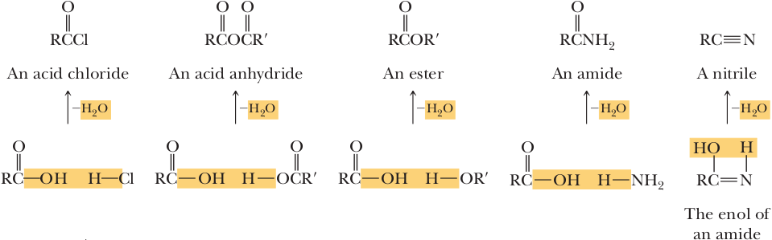

Functional derivatives of Carboxylic Acids
Carboxylic acid derivatives are described as compounds that can be converted to carboxylic acids via simple acidic orbasic hydrolysis. The most important acid derivatives are:
acid halides
acid anhydrides
esters
amides (it. ammidi)
Under the general formula of each functional group is an illustration to show you how the group is formally related to a carboxylic acid. Formal loss of -OH from a carboxyl group and H- from H-Cl, for example, gives an acid chloride. Similarly, loss of -OH from a carboxyl group and H- from ammonia gives an amide. For illustrative purposes, we show each of these reactions as a formal loss of water. However, as we will see in this chapter, some actual mechanisms do not involve a step in which an H2O molecule is lost.
In studying the chemistry of carboxylic acid derivatives in the next few sections, we’ll be concerned largely with the reactions of just a few nucleophiles and will see that the same kinds of reactions keep occurring.
Hydrolysis Reaction with water to yield a carboxylic acid
Alcoholysis Reaction with an alcohol to yield an ester
Aminolysis Reaction with ammonia or an amine to yield an amide
Reduction Reaction with a hydride reducing agent to yield an aldehyde or an alcohol
Grignard reaction. Reaction with an organometallic reagent to yield a ketone or an alcohol
Nomenclature of Multifunctional Compounds
We have now covered a wide variety of functional groups, and 'real' molecules contain many of these different functionalities. How do we go about correctly naming these molecules? In choosing the principal group for the root name, the following priorities are observed.
Acid > ester > amide > nitrile > aldehyde > ketone > alcohol > amine > alkene > alkyne > alkane > ethers > halides